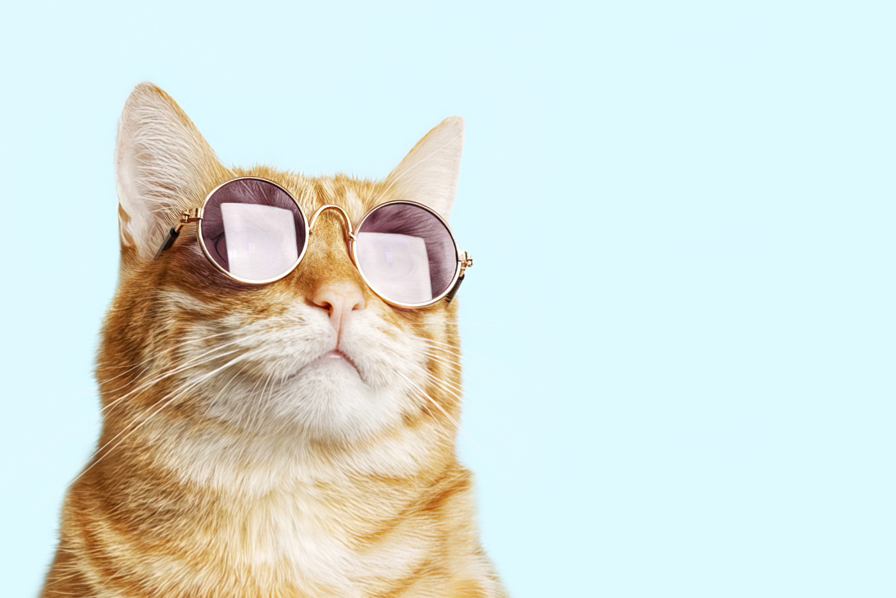

Лабораторная работа №3:
Конвертер возраста
Конвертер кошачьего возраста чел. год ↔ кош. год

Выбор режима:
Перевести из кошачьего возраста в человеческий
Перевести из человеческого возраста в кошачий
Поехали!
Результат конвертации:
Вы еще ничего не конвертировали
Таблица последних результатов
Кошачий возраст
Человеческий возраст